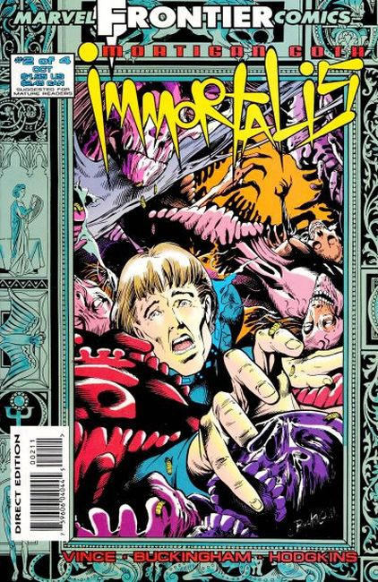
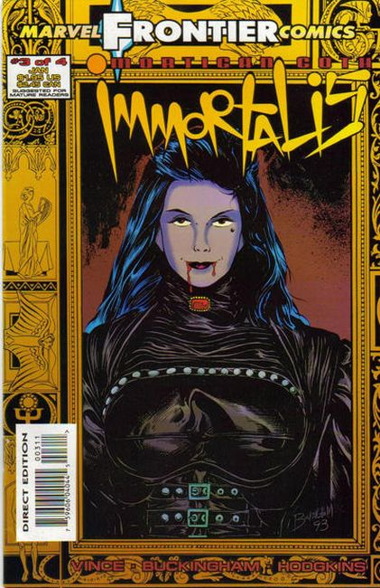
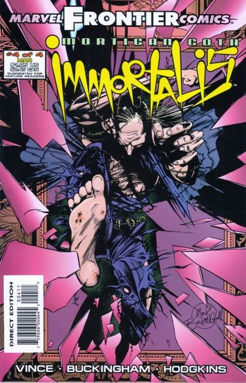

Marvel UK's Frontier imprint introduces Immortalis, a 4-issue limited series, with a foil stamped cover.
#1 Having lost his soul to the devil, Mortigan Goth spends eternity seeking adventure. When Goth meets Dr. Strange during an earthquake, Strange asks for his help in curing his brother's vampirism.

#2 The limited series from Marvel UK's Frontier imprint continues. When Mortigan Goth takes his ghostly partner, Tony, to England, he hooks up with Dr. Strange who seeks his help in curing the vampiric Katherine. To cure her, they'll have to kill her, but can her former lover, Goth, go through with it?

#3 Mortigan Goth targets his old love, Katherine, when he leads a vampire hunt. But wily Katherine is well-prepared, having planned a series of surprises nobody anticipates!

#4 The battle for souls heats up in the fiery climax! The supernatural Marvel Frontier limited series comes to a close in a spectacular, explosive battle. Major villain Mephisto plays a major role in the going ons and its going to take the help of Dr. Strange and Spitfire to win the day.